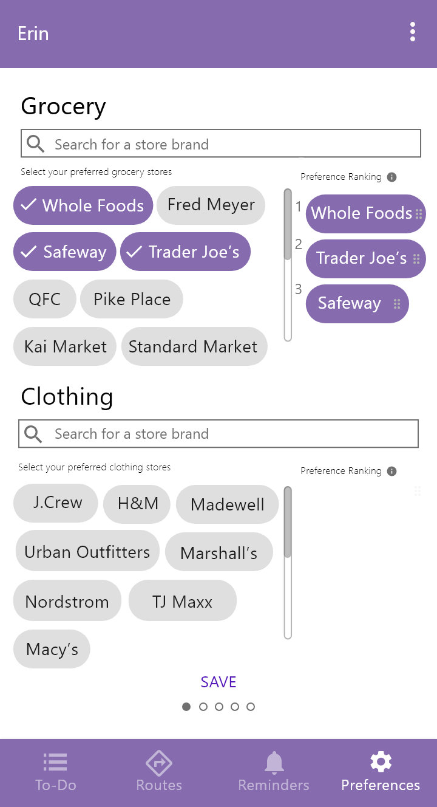
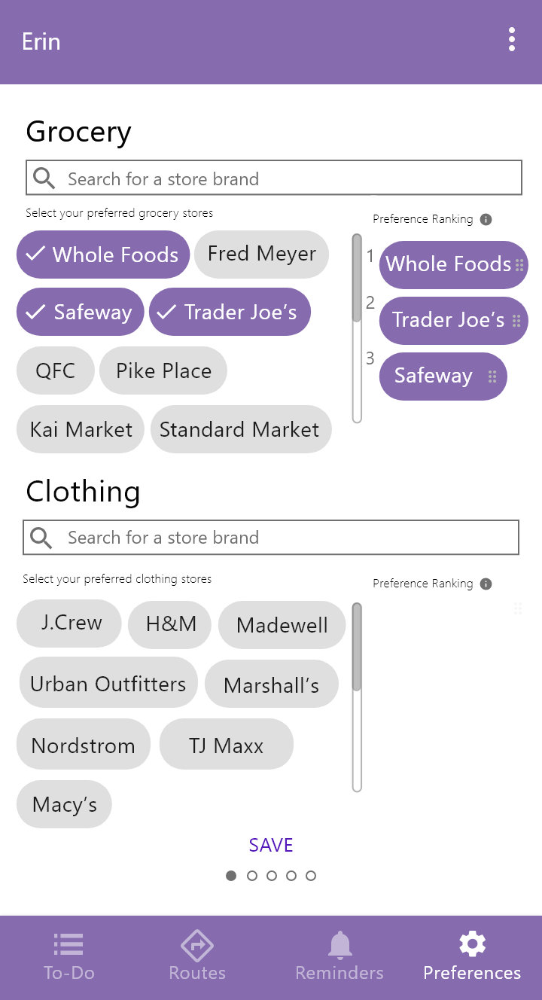
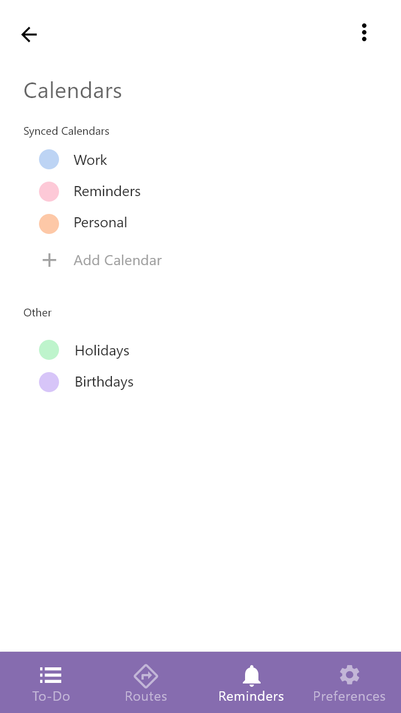
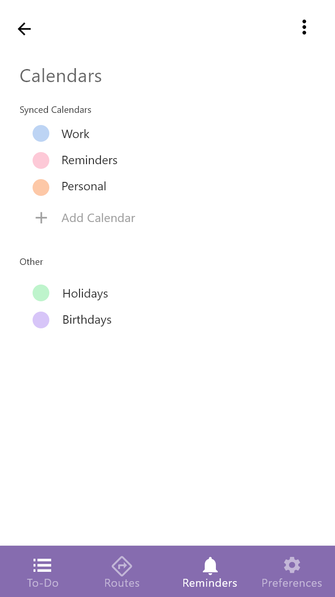

ERIN
PROJECT: App Design | DATE: December 2018 | Tools: Adobe Xd, Sketching | University of Washington
OVERVIEW
ERIN provides drivers with tools to manage their tight schedules on the go, optimizing the time that people spend in their car. ERIN advises the most productive task completion strategies and provides the users with contextually relevant reminders for busy drivers. The application allows for safe and efficient while driving through voice interaction, and extends the Google Suite of productivity tools in order to encourage cross-functional use.
RESEARCH
Research Methods: Stakeholder Mapping, Survey, Contextual Inquiry, Semi-Structured Interview, Affinity Diagraming, Personas
Key Findings: Through affinity diagramming, our project team worked together to identify common themes in our qualitative data.
1. Participants plan based off of location where errands must be completed
2. Participants have specific times at which errands must be completed
3. Participants often forget to complete certain parts of errands
4. Participants struggle with the planning and prioritization of errands
Personas: Based on our key findings, we created a primary and secondary persona to guide our design efforts.
DESIGN PROCESS
Sketching: During the design phase, an important part of our process included the initial sketching session that prefaced our high fidelity prototype build. During this phase we assessed our design requirements and began our design process on paper with a low-fidelity series of rough sketches.
Prototyping: Prototyping for this application was done using Adobe XD. We decided to use this tool in order to afford VUI (Voice User Interface)
Main Features
Our team specified major design requirements based on the key user needs that we had identified during the research phase.
Create personalized lists: Users can create personalized lists for various tasks or errands that must be completed. The Erin app provides users with the opportunity to check off items, add reminders, and add a location for each list.


Contextually relevant reminders: Reminders can be set based on Date/Time as well as location in order to encourage reminders while driving. Optimized for users who have similar commute patterns on a daily basis.


%20%E2%80%93%201@2x.png)

Automated planning and modification of tasks: Through enabling voice interactions, users can safely plan and modify of tasks in a hands-free way while driving.
@2x.png)
Route optimization: Primary and alternative routes offer the user the ability to find a balance between efficiency and preference when completing tasks. “Primary” offers the optimized routing based on the customers existing lists, while “Alternative” suggests a route with different stores with a shorter trip time. When using the routes feature, users have the option to select from their current lists to "execute" a task, as well as assign estimated times for each task.


Customized user preferences: Through collecting the preferences of the user, ERIN can provide smart suggestions for list locations and alternative routes. Research revealed that although users are time-sensitive, many are selective about the location at which they complete their tasks. In the preferences screen, users can select and rank their perferred stores to complete their errands.

 

Integration of scheduling tools: As an extension of the Google Suite, ERIN affords the integration of google calendar, allowing users to import their personal calendars in order to cross-functionally plan and reschedule errands around existing commitments.
 

UX CHALLENGES AND TAKEAWAYS
1. Avoiding the solution first mindset: spend more time with user research and problem scope definition
2. Persona Prioritization: focusing on the needs of the user and not falling into the “fancy” features trap
3. Avoid scope creep: don’t be afraid to make design decisions
Check out our interactive prototype here!
Project Team: Anusha Bhaskarla (Product Manger, Design), Minkyong Kim (Design, Research), Cassandra Lee (Research, Usability Testing), Carrie Ding (Usability Testing)